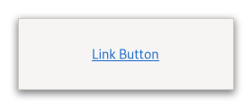

Gtk.LinkButton¶
Example¶

- Subclasses:
None
Methods¶
- Inherited:
Gtk.Button (16), Gtk.Widget (183), GObject.Object (37), Gtk.Accessible (18), Gtk.Buildable (1), Gtk.Actionable (5)
- Structs:
class |
|
class |
|
|
|
|
|
|
|
|
Virtual Methods¶
Properties¶
- Inherited:
Gtk.Button (6), Gtk.Widget (35), Gtk.Accessible (1), Gtk.Actionable (2)
Name |
Type |
Flags |
Short Description |
|---|---|---|---|
r/w |
|||
r/w/en |
Signals¶
- Inherited:
Name |
Short Description |
|---|---|
Emitted each time the |
Fields¶
- Inherited:
Class Details¶
- class Gtk.LinkButton(**kwargs)¶
- Bases:
- Abstract:
No
A button with a hyperlink.
<picture> <source srcset=”link-button-dark.png” media=”(prefers-color-scheme: dark)”> <img alt=”An example
Gtk.LinkButton" src=”link-button.png”> </picture>It is useful to show quick links to resources.
A link button is created by calling either [ctor`Gtk`.LinkButton.new] or [ctor`Gtk`.LinkButton.new_with_label]. If using the former, the URI you pass to the constructor is used as a label for the widget.
The URI bound to a
GtkLinkButtoncan be set specifically using [method`Gtk`.LinkButton.set_uri].By default,
GtkLinkButtoncalls [method`Gtk`.FileLauncher.launch] when the button is clicked. This behaviour can be overridden by connecting to the [signal`Gtk`.LinkButton::activate-link] signal and returningTruefrom the signal handler.- Shortcuts and Gestures
GtkLinkButtonsupports the following keyboard shortcuts:<kbd>Shift</kbd>+<kbd>F10</kbd> or <kbd>Menu</kbd> opens the context menu.
- Actions
GtkLinkButtondefines a set of built-in actions:clipboard.copycopies the url to the clipboard.menu.popupopens the context menu.
- CSS nodes
GtkLinkButtonhas a single CSS node with name button. To differentiate it from a plainGtkButton, it gets the .link style class.- Accessibility
GtkLinkButtonuses the [enum`Gtk`.AccessibleRole.link] role.- classmethod new(uri)[source]¶
- Parameters:
uri (
str) – a valid URI- Returns:
a new link button widget.
- Return type:
Creates a new
GtkLinkButtonwith the URI as its text.
- classmethod new_with_label(uri, label)[source]¶
- Parameters:
- Returns:
a new link button widget.
- Return type:
Creates a new
GtkLinkButtoncontaining a label.
- get_uri()[source]¶
- Returns:
a valid URI. The returned string is owned by the link button and should not be modified or freed.
- Return type:
Retrieves the URI of the
GtkLinkButton.
- get_visited()[source]¶
-
Retrieves the “visited” state of the
GtkLinkButton.The button becomes visited when it is clicked. If the URI is changed on the button, the “visited” state is unset again.
The state may also be changed using [method`Gtk`.LinkButton.set_visited].
Signal Details¶
- Gtk.LinkButton.signals.activate_link(link_button)¶
- Signal Name:
activate-link- Flags:
- Parameters:
link_button (
Gtk.LinkButton) – The object which received the signal- Returns:
Trueif the signal has been handled- Return type:
Emitted each time the
GtkLinkButtonis clicked.The default handler will call [method`Gtk`.FileLauncher.launch] with the URI stored inside the [property`Gtk`.LinkButton:uri] property.
To override the default behavior, you can connect to the
::activate-linksignal and stop the propagation of the signal by returningTruefrom your handler.
Property Details¶
- Gtk.LinkButton.props.uri¶
-
The URI bound to this button.